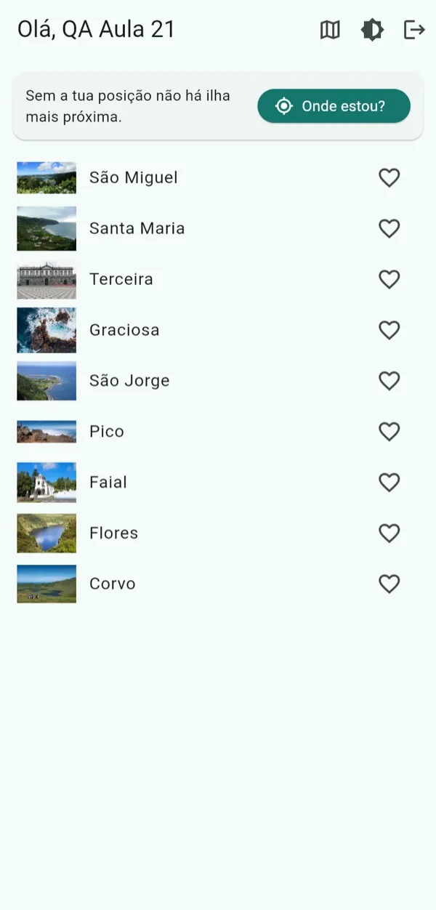
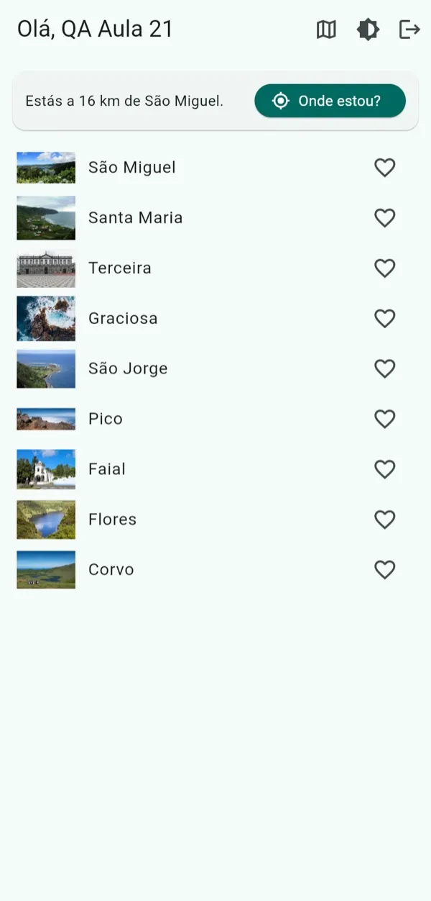
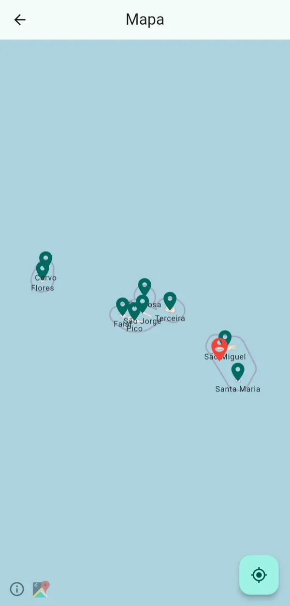
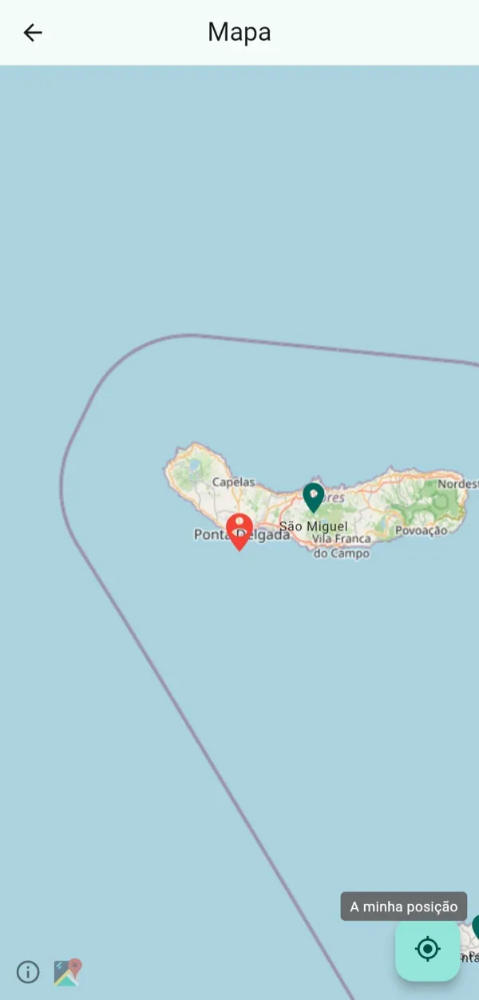

Aula 21 · Semana 9 · Sexta, 6 de novembro de 2026 · 08:30 às 12:30
Workshop: localização, mapas e permissões
Teoria: de onde vem a posição do telemóvel, o que custa em bateria, as permissões e as quatro respostas possíveis, e um mapa feito de azulejos. Três jogos sobre isso. Prática em quatro passos no Tempo Açores: "Onde estou?", a ilha mais próxima, um pino por ilha no mapa e a minha posição no mapa. No fim, o mapa entra no projeto do grupo.
Repositório: pdm-aula-21
No fim desta aula consegues
Explicar de onde vem a posição do telemóvel (céu, lojas e sino) e porque é que mais precisão custa mais bateria.
Pedir a permissão de localização no momento certo e tratar as quatro respostas, incluindo "nunca mais".
Calcular a distância a cada ilha e dizer qual é a mais próxima.
Mostrar um mapa feito de azulejos do OpenStreetMap, com um pino por ilha e a tua posição.
Escolher entre Google Maps, Apple Maps e OpenStreetMap, e dizer o que cada um custa.
A história de hoje: a app faz três perguntas
Hoje a app Tempo Açores quer saber onde está, tem de pedir licença, e mostra um mapa.
A pergunta
Na app
Hoje, na prática
Onde estou?
O sistema junta satélites, Wi-Fi e antenas e dá uma posição
Passos 1 e 2: a posição e a ilha mais próxima
Posso saber?
A permissão: pede-se à porta e aceita-se qualquer resposta
Passo 1: as quatro respostas
Como mostro?
Um mapa feito de azulejos, com pinos por cima
Passos 3 e 4: os pinos e a minha posição
De onde vem a posição: o céu, as lojas e o sino
Três maneiras de saber onde estás. Quanto mais exata, mais bateria.
O céu: os satélites dizem a hora e a posição deles; o telemóvel faz as contas. Demora 10 a 30 segundos a "ver" satélites suficientes. Numa garagem, nunca.
As lojas: o telemóvel vê os nomes das redes Wi-Fi à volta e compara-os com um catálogo da Google ou da Apple. Não precisa de se ligar a nenhuma.
O sino: a antena da rede móvel a que está ligado. Chega para saber a vila, não a rua.
Para os testes: a app pede uma precisão; é o sistema que escolhe e junta as fontes.
Precisão ou bateria: a lanterna e a luz ambiente
Analogia O GPS é uma lanterna forte: mostra a porta certa, mas gasta pilhas enquanto está ligada. O Wi-Fi e as antenas são a luz ambiente: já está acesa, não custa nada, e chega para saber a rua. Pedir medium é usar a luz ambiente; pedir high é acender a lanterna.
Uma posição (getCurrentPosition): "onde estou agora". Liga as fontes, apanha uma posição, desliga. É o que uma app de tempo precisa.
Um stream (getPositionStream): posições seguidas enquanto a pessoa se mexe. Navegação, corrida, entregas. Com distanceFilter para não avisar a cada metro.
Um limite de tempo (timeLimit): dentro de casa a posição pode nunca chegar; ao fim de 15 segundos a app diz "sem sinal" em vez de ficar a rodar.
No Tempo Açores: as ilhas estão a dezenas de quilómetros umas das outras. medium chega e poupa a bateria.
Exemplos: a Uber usa um stream de alta precisão só durante a viagem; o Instagram pede uma posição quando tocas em "adicionar localização".
Para os testes: pede a precisão mais baixa que o caso de uso aguenta; precisão alta é GPS e GPS é bateria.
Permissões: que tipos há
Permissão
Android
iOS
Em uso (while in use)
Só com a app no ecrã. É a que pedes por defeito.
"Ao usar a app". A mesma ideia.
Sempre (always)
Pedido à parte, depois do "em uso"; a partir do Android 11 só nas definições da app.
Pedido à parte; o iOS volta a perguntar mais tarde se a app a usa mesmo.
Precisa ou aproximada
Android 12: a pessoa escolhe "aproximada" mesmo que peças precisa. A app recebe uns quilómetros de erro.
iOS 14: um interruptor "Localização precisa" no diálogo.
Só desta vez
Android 11: acaba quando a app fecha.
"Permitir uma vez": o mesmo.
No Tempo Açores pedimos em uso, e aceitamos aproximada: para saber a ilha mais próxima, uns quilómetros de erro não fazem diferença.
O "sempre" é outra conversa: a app a seguir-te com o ecrã desligado. Fica para já a seguir.
Para os testes: "sempre" e "precisa" são pedidos à parte e posteriores; começa pelo "em uso", e por aproximada se te chegar.
As quatro respostas à porta
Quatro casos a tratar: concedida, negada, negada para sempre e serviço desligado. Só a negada admite voltar a pedir.
Analogia Pedir uma permissão é pedir licença para entrar num quarto da casa da pessoa. Pede-se à porta desse quarto, com a razão à vista, e não à entrada da casa: no arranque da app ainda ninguém sabe para que serve. Se a resposta for "nunca mais", a app não pode voltar a bater à porta; só a pessoa a abre, nas definições.
A razão é obrigatória no iOS: sem a frase NSLocationWhenInUseUsageDescription no Info.plist o diálogo nem aparece. Escreve o que a pessoa ganha: "Para mostrar a ilha mais próxima", não "Precisamos da sua localização".
"Nunca mais": no iOS uma recusa é definitiva; no Android, duas recusas seguidas. A partir daí requestPermission() responde logo, sem diálogo.
A app continua útil sem a permissão: mostra a lista na mesma. Nunca bloqueies o ecrã atrás de um pedido, e nunca fiques em ciclo a pedir.
Para os testes: uma app trata quatro casos: concedida, negada, negada para sempre e serviço desligado.
Segundo plano e geofencing: o que fica de fora hoje
🚶 Alguém a seguir-te o dia todo
Localização em segundo plano: a app continua a receber posições com o ecrã desligado. Navegação, Strava, entregas, Find My. Uma app de tempo não precisa.
Android: permissão à parte mais um serviço com notificação sempre visível. A Play Store exige um formulário e um vídeo a justificar.
iOS: "Sempre" mais o modo de fundo. Indicador azul na barra, e de vez em quando um aviso: "a app X usou a tua localização 34 vezes em segundo plano". Muita gente desinstala aí.
GPS contínuo esgota a bateria em horas, e a culpa é da app.
🔔 Uma campainha no portão
Geofencing: uma cerca virtual, centro e raio. O sistema acorda a app quando a pessoa entra ou sai. A app pode estar fechada.
Quem vigia é o sistema, com Wi-Fi e antenas: pouca bateria, mas minutos de atraso e raio mínimo de uns 100 m.
Limites: 100 cercas por app no Android, 20 no iOS. Exige permissão em segundo plano.
Casos: "aviso vermelho na zona onde acabaste de entrar", lembretes por local, "estás a 200 m da loja". Não entra no projeto.
Para os testes: segundo plano só para funcionalidades centrais, com declaração nas lojas e a pessoa a ver que está a acontecer; geofencing é feito pelo sistema, poupa bateria e tem minutos de atraso.
Um mapa feito de azulejos
Um mapa não é uma imagem: é uma parede de azulejos, cada um descarregado à parte. Fazer zoom é pedir azulejos de outro nível.
Cada nível de zoom tem o dobro dos azulejos do anterior em cada direção. Ao nível 6 os Açores inteiros cabem num ecrã de nove; ao nível 19 vê-se a tua rua.
O flutter_map desenha os azulejos em Dart, sem código nativo: corre no Chrome, no Android e no iOS da mesma maneira.
Trocar de fornecedor é trocar o endereço dos azulejos (e acrescentar a chave, se a houver). Os pinos por cima ficam iguais.
Para os testes: um mapa web ou móvel é feito de azulejos de 256 px, pedidos por nível de zoom, coluna e linha.
Mapas: as opções, e qual usar
Opção
Custos e chaves
Onde corre
Quando
Google Maps (google_maps_flutter)
Chave de API e conta de faturação com cartão. O mapa em mobile não é cobrado; moradas, direções e tráfego são.
Android e iOS
Tráfego, Street View, autocomplete de moradas, o aspeto que os utilizadores conhecem.
Apple Maps (MapKit)
Grátis, sem chave, dentro de apps iOS.
Só iOS
Apps só iOS, com a privacidade como argumento.
OpenStreetMap + flutter_map
Grátis, sem chave. Azulejos públicos com regras de uso justo e atribuição obrigatória.
Todas: é Dart
Projetos pequenos, protótipos, o Tempo Açores.
Fornecedor de azulejos (MapTiler, Stadia, Mapbox)
Chave; grátis até um teto mensal, depois paga.
Todas
Quando a app com OSM cresce e os azulejos públicos começam a dizer que não.
No Tempo Açores: flutter_map com azulejos do OpenStreetMap. Sem chave, sem cartão, corre no Chrome e no telemóvel.
As regras do OSM: a atribuição "OpenStreetMap contributors" visível, a app a identificar-se (userAgentPackageName), nada de descarregar azulejos em massa. Uma app com milhares de utilizadores vai para um fornecedor pago.
Licenças: os dados do OSM são abertos (ODbL), com atribuição. Os da Google e da Apple têm termos: não podes guardar azulejos nem mostrar os dados deles noutro mapa.
Para os testes: o OSM é grátis mas tem regras de uso e atribuição obrigatória; o Google Maps exige chave e conta de faturação mesmo quando não cobra.
Jogo: que fonte?
Abre tiago-rocha.github.io/pdm-aulas/aulas/aula-21.html no teu computador e vem a este slide.
Escreve o primeiro nome e entra. Ficas dentro para os jogos da aula toda.
Um cenário de cada vez: vota sozinho, discute com o colega do lado, vota outra vez. Só depois vês a resposta.
Que fonte? A turma
Jogo: o que responde a porta?
Um cenário de cada vez, todos ao mesmo tempo. Vota, discute com o colega do lado, vota outra vez.
O que responde a porta? A turma
Jogo: qual mapa?
Cinco situações. Para cada uma, a opção de mapa que faz mais sentido.
Qual mapa? A turma
Hoje, na app

Ponto de partida. O cartão e o botão já lá estão, mas a porta diz sempre "não".

Depois do passo 2. A app sabe onde estás e qual é a ilha mais próxima.

Depois do passo 3. Um pino com o nome em cada ilha.

Depois do passo 4. O mapa leva-te até ti, com um pino vermelho.
Pedir à porta e tratar as quatro respostas: a posição aparece no cartão.
Medir a distância a cada ilha e ficar com a mais curta.
Um pino com o nome em cada ilha do mapa; tocar abre a folha da ilha.
O botão "A minha posição" leva o mapa até ti.
Começar: o repositório de hoje
git clone https://github.com/Tiago-Rocha/pdm-aula-21.git
cd pdm-aula-21
flutter pub get
Corre a app, tudo numa linha: flutter run -d chrome --dart-define=CLIENT_ID=... --dart-define=CLIENT_SECRET=.... O clientId e o clientSecret são os do issue #1 do teu pdm-miniprojeto, ou os do teu grupo.
Entra com a tua conta. Por cima da lista está um cartão novo com o botão Onde estou?. Toca-lhe: "Sem a tua posição não há ilha mais próxima". É o ponto de partida.
Na barra de cima há um botão novo, o mapa. Abre-o: os Açores em azulejos, com nove pinos pequenos sem nome.
Trabalhas nos comentários TODO 1 a TODO 4. Abre um segundo terminal para os comandos git. No Chrome, a porta é o diálogo do próprio browser; para voltar a testar, carrega no cadeado ao lado do endereço e repõe a permissão.
1. Posso saber onde estás?
O cartão, o notifier e a posição já estão feitos. Falta a porta: o check() do LocationService.
/// What the phone answered when the app asked for the position.
enum LocationStatus { ready, serviceOff, denied, deniedForever }
O LocationNotifier chama check() e, se a resposta for ready, pede a posição. Para cada outra resposta tem uma frase pronta para o cartão.
O geolocator fala com o sistema: isLocationServiceEnabled (a casa está aberta?), checkPermission (o que respondeu da última vez?) e requestPermission (o diálogo).
Passo 1: as quatro respostas
/// Asks for permission, if needed, and says which answer came back.
Future<LocationStatus> check() async {
if (!await Geolocator.isLocationServiceEnabled()) {
return LocationStatus.serviceOff; // off for every app, not just ours
}
var permission = await Geolocator.checkPermission();
if (permission == LocationPermission.denied) {
permission = await Geolocator.requestPermission(); // the dialog
}
return switch (permission) {
LocationPermission.whileInUse ||
LocationPermission.always => LocationStatus.ready,
LocationPermission.deniedForever => LocationStatus.deniedForever,
_ => LocationStatus.denied,
};
}
Faz Troca o corpo do check(): primeiro a casa (o serviço), depois a porta (a permissão), e no fim o switch que traduz a resposta do sistema para a nossa.
Na app: toca em "Onde estou?". O Chrome pergunta; aceita, e o cartão diz "Estás em 37.74, -25.67". Repõe a permissão no cadeado, recusa, e o cartão diz "Sem permissão. Muda isso nas definições". Nada rebenta. No Chrome, recusar conta logo como "nunca mais"; no telemóvel, a primeira recusa é só "agora não".
Pergunta à turma Porque é que só se chama requestPermission() quando a resposta anterior foi denied?
2. A ilha mais próxima
Mede-se a distância a cada ilha e fica-se com a mais curta. Nove medições, um vencedor.
distanceBetween devolve metros em linha reta sobre a esfera. Não é distância por estrada; para saber a ilha chega.
Cada Island traz agora latitude e longitude da API: o centro da ilha.
O resultado é um record, ({Island island, double metres}): dois valores de uma vez, sem criar uma classe.
Passo 2: medir e ficar com a mais curta
git stash -u
git checkout passo-1
flutter pub get
/// Measures the distance to every island; the shortest wins.
Nearest nearestIsland(Position position, List<Island> islands) {
var best = islands.first;
var shortest = double.infinity;
for (final island in islands) {
final metres = distanceTo(position, island);
if (metres < shortest) {
shortest = metres;
best = island;
}
}
return (island: best, metres: shortest);
}
nearest = nearestIsland(found, islands);
Faz Escreve o ciclo: começa com a primeira ilha e uma distância infinita, e troca sempre que encontras uma mais curta. Depois, no notifier, guarda o resultado logo a seguir à posição.
Na app: toca em "Onde estou?". O cartão passa a dizer "Estás a 16 km de São Miguel".
Pergunta à turma Um colega com o emulador na Califórnia toca no botão. O que diz o cartão?
3. Um pino por ilha
Um FlutterMap é uma pilha de camadas. O pino é um widget normal preso a uma latitude e longitude.
children: [
TileLayer(
urlTemplate: 'https://tile.openstreetmap.org/{z}/{x}/{y}.png',
userAgentPackageName: 'pt.uac.tempo_acores',
),
MarkerLayer(
markers: [
for (final island in islands) _marker(context, island),
if (position != null) _mePin(position),
],
),
const RichAttributionWidget(
alignment: AttributionAlignment.bottomLeft, // the button is right
attributions: [TextSourceAttribution('OpenStreetMap contributors')],
),
],
Passo 3: um pino com o nome
git stash -u
git checkout passo-2
flutter pub get
import '../widgets/island_sheet.dart';
/// A pin with the name; a tap opens the sheet.
Marker _marker(BuildContext context, Island island) {
final theme = Theme.of(context);
return Marker(
point: LatLng(island.latitude, island.longitude),
width: 110,
height: 56,
child: GestureDetector(
onTap: () => showIslandSheet(context, island),
child: Column(
mainAxisSize: MainAxisSize.min,
children: [
Icon(Icons.place, size: 32, color: theme.colorScheme.primary),
Text(island.name, style: theme.textTheme.labelSmall),
],
),
),
);
}
Faz Troca o corpo do _marker: um GestureDetector com uma Column lá dentro, o ícone em cima e o nome em baixo. A folha, showIslandSheet, já está feita em widgets/island_sheet.dart.
Na app: nove pinos com nome. Toca num: abre a folha com a fotografia e, se já tocaste em "Onde estou?", a distância até ti. Faz zoom no grupo do meio para separar as cinco ilhas.
Passo 4: a minha posição no mapa
git stash -u
git checkout passo-3
flutter pub get
/// Asks for the position and moves the map there.
Future<void> _goToMe() async {
final location = context.read<LocationNotifier>();
await location.locate(context.read<ForecastNotifier>().islands);
if (!mounted) return; // the person may have left the screen
final position = location.position;
if (position == null) {
ScaffoldMessenger.of(context)
.showSnackBar(SnackBar(content: Text(location.message)));
return;
}
// the red pin is already there: the screen watches the notifier
_controller.move(LatLng(position.latitude, position.longitude), 9);
}
Faz O botão redondo já chama _goToMe. Pede a posição ao LocationNotifier, o mesmo do cartão, e move a câmara para lá com o MapController.
Na app: toca no botão redondo. O mapa centra-se em ti, com um pino vermelho. Se a permissão estiver negada, aparece a frase do cartão em baixo.
Pergunta à turma O pino vermelho não é posto aqui. Onde é que ele aparece, e porquê?
Onde ficámos
Onde está cada peça da história no código.
O check() pede à porta e traduz as quatro respostas (passo 1).
O nearestIsland mede e fica com a mais curta; o notifier guarda (passo 2).
Um pino por ilha, com o nome e a folha (passo 3).
"A minha posição" pede ao notifier e move a câmara (passo 4).
O branch passo-4 é o estado final. A pasta location/, o LocationNotifier, o cartão, a folha e o MapScreen passam para o projeto do grupo como estão.
Para o projeto: o separador Mapa
No projeto do grupo: flutter pub add geolocator flutter_map latlong2. Depois as permissões no AndroidManifest.xml e a frase no Info.plist, copiadas do repositório de hoje.
Copia lib/location/, lib/state/location_notifier.dart, lib/widgets/nearest_card.dart, lib/widgets/island_sheet.dart e lib/screens/map_screen.dart. O vosso Island precisa de latitude e longitude, como em lib/models/island.dart. Regista o LocationNotifier no main.dart, como no de hoje.
Com o go_router do projeto: uma rota /mapa e um destino "Mapa" na NavigationBar, em vez do botão na barra. O cartão vai para o ecrã de início.
Um PR por grupo, com um revisor. A definição de pronto: corre no telemóvel, a permissão negada não rebenta a app, e a atribuição do OSM está visível.
Dividir o trabalho Uma pessoa faz os packages e as permissões, outra o mapa e a rota, outra o cartão e o notifier. Três commits pequenos no mesmo branch, um PR.
Até segunda
Segunda
Segunda, 9 de novembro, das 16:00 às 18:00: deep links e notificações locais. O mapa e a folha da ilha vão ser precisos.
Tragam a app do grupo a correr no telemóvel, com o PR do mapa aberto ou já fechado.
O estado final de hoje fica no branch passo-4: git stash -u e depois git checkout passo-4.
Para quem quiser ler mais
geolocator: as precisões por plataforma, os erros de cada método e o que cada sistema exige.
Location permissions no Android: precisa vs aproximada, em uso vs segundo plano, o que mudou em cada versão.